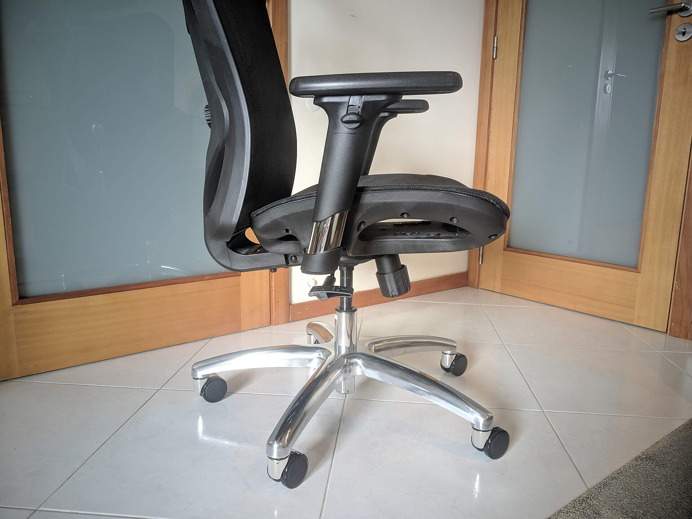
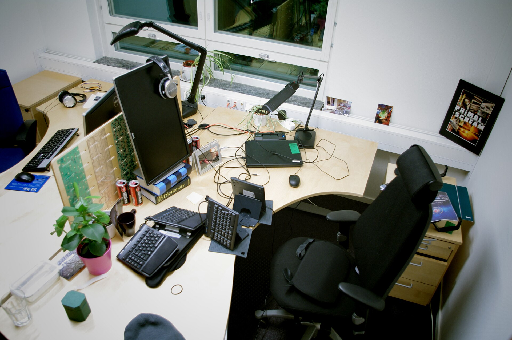
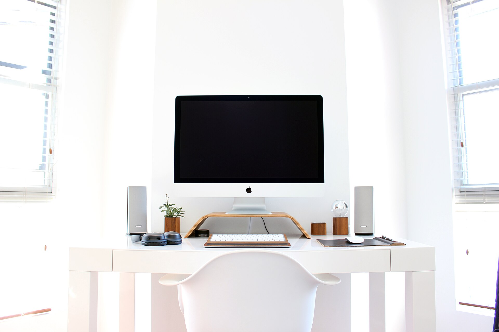
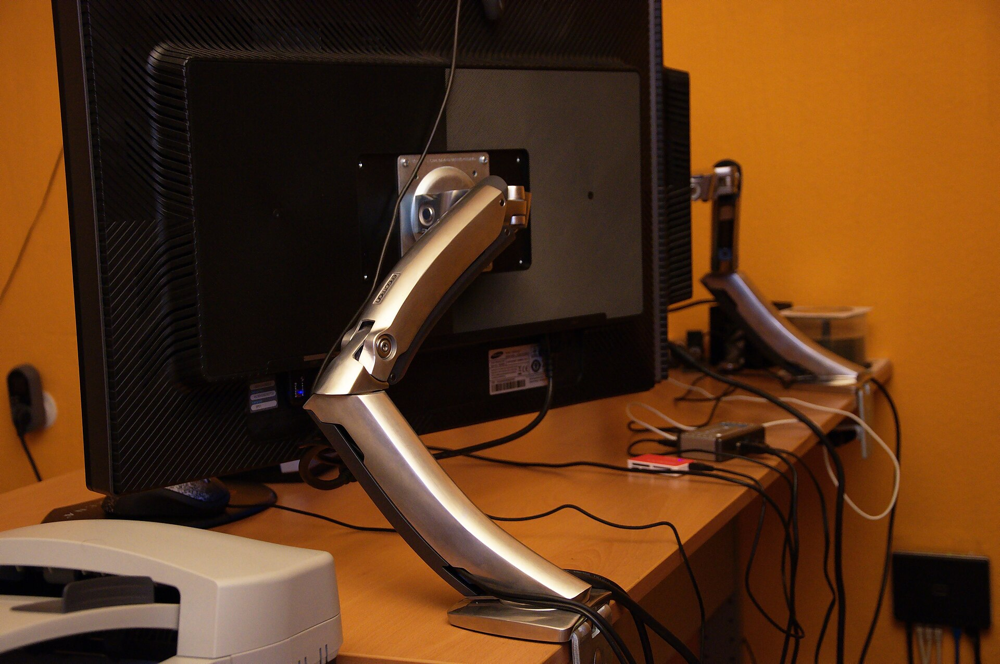
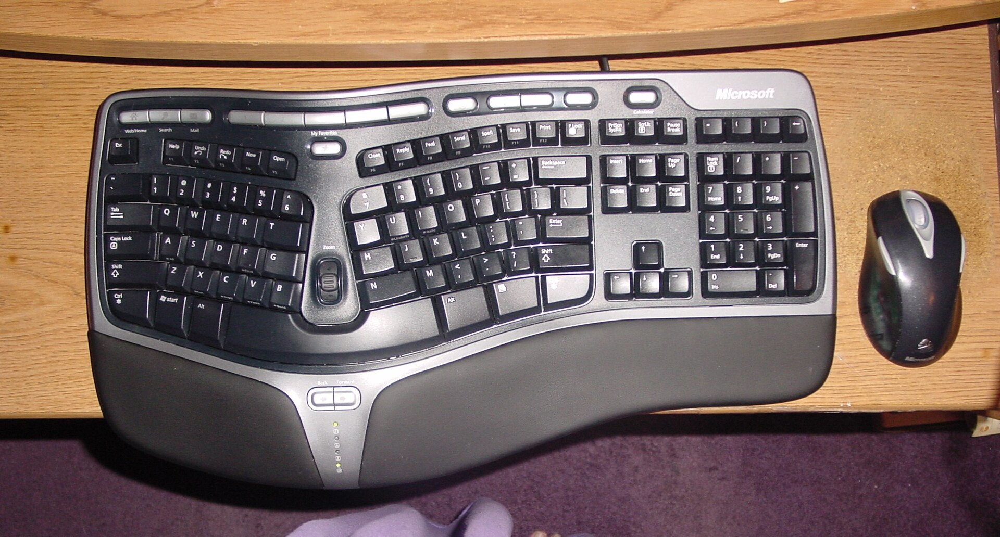
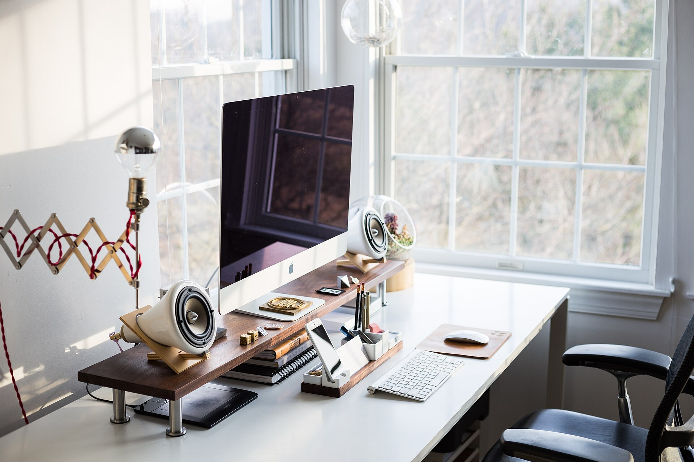
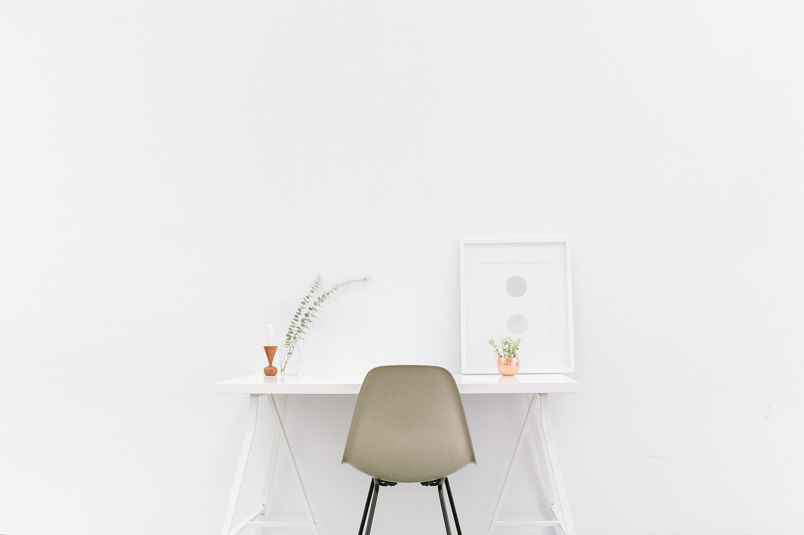

Ergonomic chairs
Supportive seating with adjustable parts, matched to how long you sit and the desk you sit at.
Explore chairsErgonomic workspace design
Furniture and one-to-one guidance that bring comfort, function and order to your home office, planned around your space and the way you work.
Workspace transformations
Small changes to layout, screen height and lighting can make a desk easier to work at. Here is what we look at first.


Illustrative photographs of two different workspaces.
Cables and clutter cleared so the work surface is for work.
Seat set up to suit your desk height and how you sit.
Display raised and centred in front of you.
Daylight and task light placed to reduce glare on the screen.
A layout that keeps everyday items within easy reach.
Common challenges
Most home offices grew out of a kitchen table or a spare corner. These are the issues we help people sort out.
Screens set too low, too high or off to one side can leave you craning or leaning.
Seat and desk heights that don't line up make it harder to sit comfortably for a full working day.
Without a plan for cables, paper and equipment, the desk fills up and the useful space disappears.
Glare, shadows or a dark corner mean squinting. A well-placed task light makes a real difference.
A desk that's too big or a chair that blocks the door. Measuring first avoids the expensive mistake.
Product discovery

Supportive seating with adjustable parts, matched to how long you sit and the desk you sit at.
Explore chairs
Desks that move between sitting and standing heights, so the work surface can suit you and the task.

Position screens at a comfortable height and free up desk space underneath.
Explore arms & stands
Everyday input devices and desk essentials that keep things in reach.
Explore accessories
Personalised consultation
We look at how you work and the room you have, then recommend what to change and what to buy, and what to leave alone.
How it works
Tell us about your room, your equipment and what isn't working through our contact page.
We suggest changes and furniture options that fit your space and the way you work.
Put the plan into action step by step, at a pace and budget that suits you.

Browse the range, or tell us about your setup and we'll point you in the right direction.